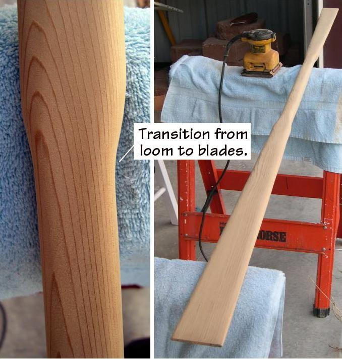

| Greenland Paddle Construction | Menu Previous Page Next Page |
|
 Continue rounding the loom and blades. Pay particular attention to the "wrist" area, being careful not to flatten out the curve that was cut with the bandsaw. Continue to work this area to achieve a smooth rounded transition from the loom to the blades. So much wood was removed with the bandsaw, that little remains to be removed during sanding, other than rounding and shaping. After the tips are rounded with a jig saw, additional sanding to thin the tips may be required. |
|